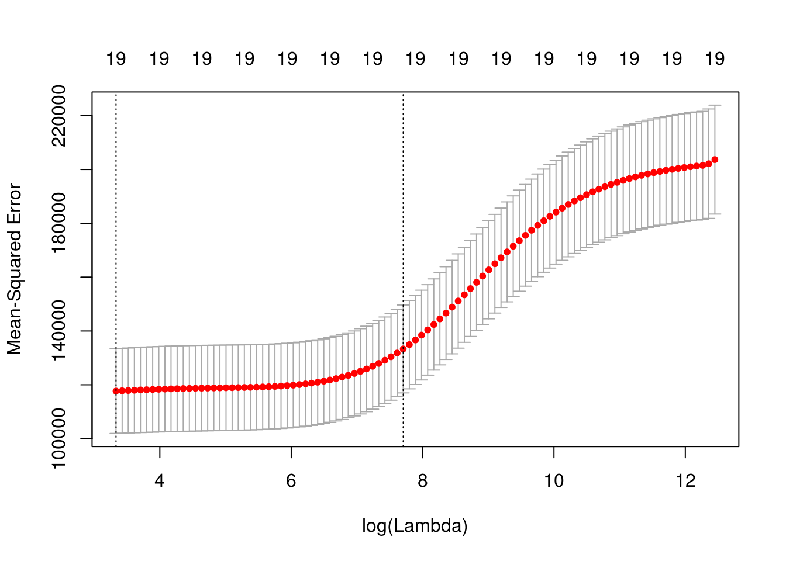
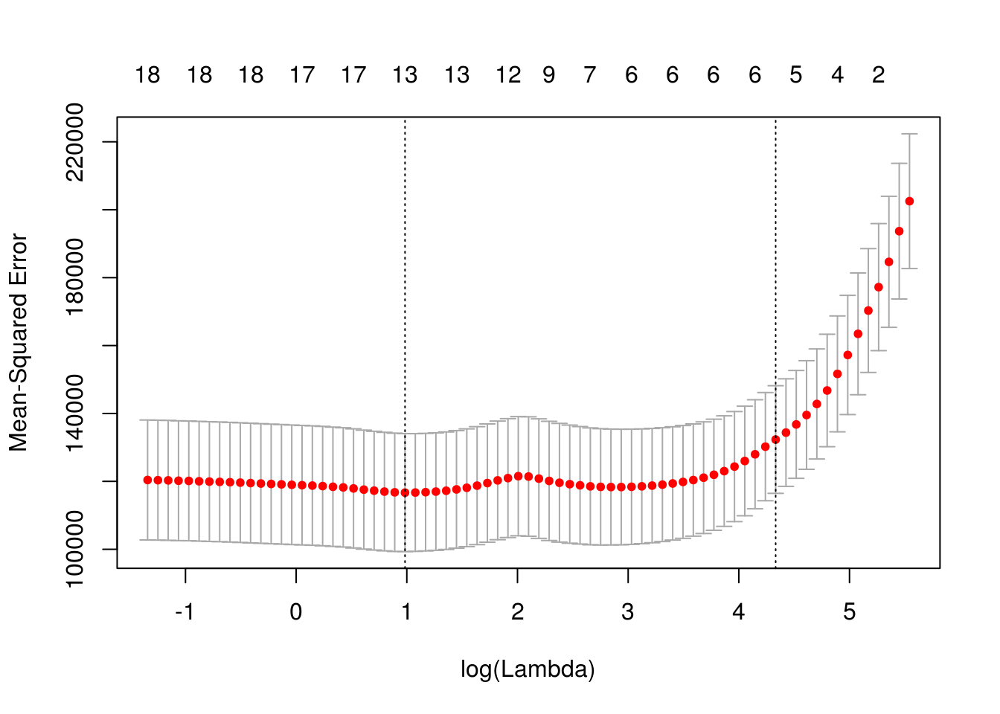
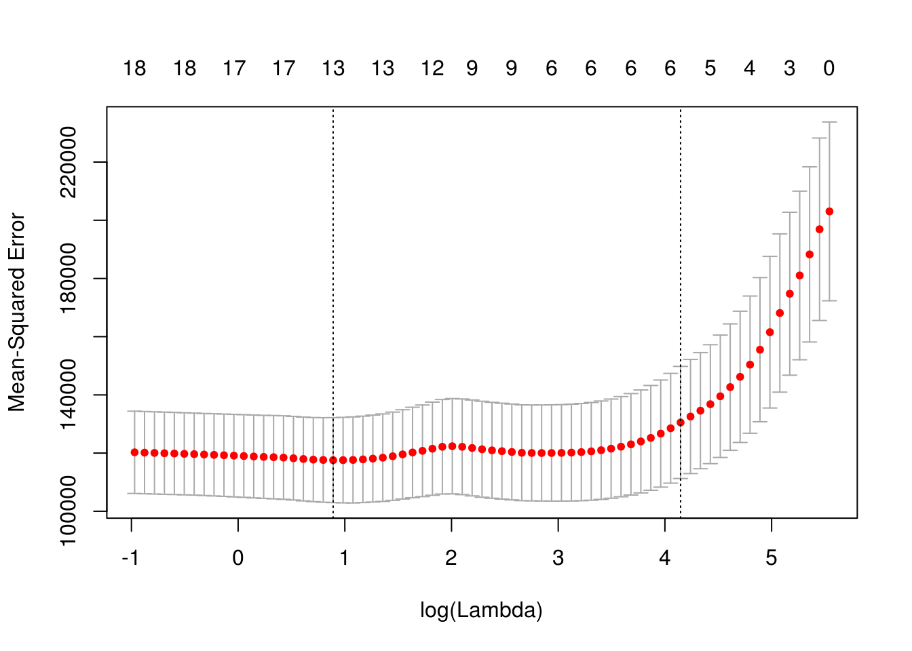
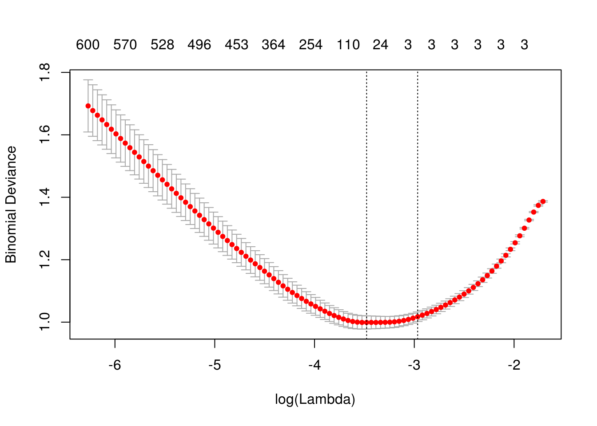
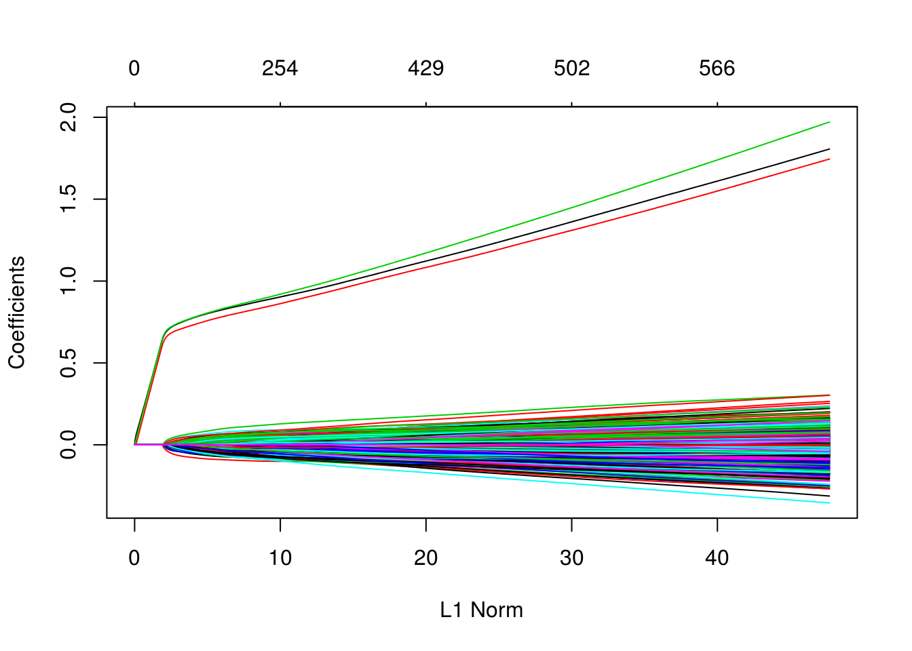

Chapter 21 Shrinkage Methods
We will use the Hitters dataset from the ISLR package to explore two shrinkage methods: ridge and lasso. These are otherwise known as penalized regression methods.
data(Hitters, package = "ISLR")This dataset has some missing data in the response Salaray. We use the na.omit() function the clean the dataset.
sum(is.na(Hitters))## [1] 59sum(is.na(Hitters$Salary))## [1] 59Hitters = na.omit(Hitters)
sum(is.na(Hitters))## [1] 0The predictors variables are offensive and defensive statistics for a number of baseball players.
names(Hitters)## [1] "AtBat" "Hits" "HmRun" "Runs" "RBI"
## [6] "Walks" "Years" "CAtBat" "CHits" "CHmRun"
## [11] "CRuns" "CRBI" "CWalks" "League" "Division"
## [16] "PutOuts" "Assists" "Errors" "Salary" "NewLeague"We use the glmnet() and cv.glmnet() functions in the glmnet package to fit penalized regressions.
library(glmnet)The glmnet function does not allow the use of model formulas, so we setup the data for ease of use with glmnet.
X = model.matrix(Salary ~ ., Hitters)[, -1]
y = Hitters$SalaryFirst, we fit a regular linear regression, and note the size of the predictors’ coefficients, and predictors’ coefficients squared. (The two penalties we will use.)
fit = lm(Salary ~ ., Hitters)
coef(fit)## (Intercept) AtBat Hits HmRun Runs
## 163.1035878 -1.9798729 7.5007675 4.3308829 -2.3762100
## RBI Walks Years CAtBat CHits
## -1.0449620 6.2312863 -3.4890543 -0.1713405 0.1339910
## CHmRun CRuns CRBI CWalks LeagueN
## -0.1728611 1.4543049 0.8077088 -0.8115709 62.5994230
## DivisionW PutOuts Assists Errors NewLeagueN
## -116.8492456 0.2818925 0.3710692 -3.3607605 -24.7623251sum(abs(coef(fit)[-1]))## [1] 238.7295sum(coef(fit)[-1] ^ 2)## [1] 18337.321.1 Ridge Regression
We first illustrate ridge regression, which can be fit using glmnet() with alpha = 0 and seeks to minimize
\[ \sum_{i=1}^{n} \left( y_i - \beta_0 - \sum_{j=1}^{p} \beta_j x_{ij} \right) ^ 2 + \lambda \sum_{j=1}^{p} \beta_j^2 . \]
Notice that the intercept is not penalized. Also, note that that ridge regression is not scale invariant like the usual unpenalized regression. Thankfully, glmnet() takes care of this internally. It automatically standardizes input for fitting, then reports fitted coefficient using the original scale.
The two plots illustrate how much the coefficients are penalized for different values of \(\lambda\). Notice none of the coefficients are forced to be zero.
fit_ridge = glmnet(X, y, alpha = 0)
plot(fit_ridge)
plot(fit_ridge, xvar = "lambda", label = TRUE)
dim(coef(fit_ridge))## [1] 20 100We use cross-validation to select a good \(\lambda\) value. The cv.glmnet()function uses 10 folds by default. The plot illustrates the MSE for the \(\lambda\)s considered. Two lines are drawn. The first is the \(\lambda\) that gives the smallest MSE. The second is the \(\lambda\) that gives an MSE within one standard error of the smallest.
fit_ridge_cv = cv.glmnet(X, y, alpha = 0)
plot(fit_ridge_cv)
The cv.glmnet() function returns several details of the fit for both \(\lambda\) values in the plot. Notice the penalty terms are smaller than the full linear regression. (As we would expect.)
coef(fit_ridge_cv)## 20 x 1 sparse Matrix of class "dgCMatrix"
## 1
## (Intercept) 172.720338908
## AtBat 0.099662970
## Hits 0.427613303
## HmRun 1.267838796
## Runs 0.676642660
## RBI 0.664847506
## Walks 0.887265880
## Years 2.665510665
## CAtBat 0.008472029
## CHits 0.033099124
## CHmRun 0.244686353
## CRuns 0.066354566
## CRBI 0.068696462
## CWalks 0.064445823
## LeagueN 4.803143606
## DivisionW -27.147059583
## PutOuts 0.063770572
## Assists 0.008745578
## Errors -0.209468235
## NewLeagueN 4.058198336coef(fit_ridge_cv, s = "lambda.min")## 20 x 1 sparse Matrix of class "dgCMatrix"
## 1
## (Intercept) 7.645824e+01
## AtBat -6.315180e-01
## Hits 2.642160e+00
## HmRun -1.388233e+00
## Runs 1.045729e+00
## RBI 7.315713e-01
## Walks 3.278001e+00
## Years -8.723734e+00
## CAtBat 1.256354e-04
## CHits 1.318975e-01
## CHmRun 6.895578e-01
## CRuns 2.830055e-01
## CRBI 2.514905e-01
## CWalks -2.599851e-01
## LeagueN 5.233720e+01
## DivisionW -1.224170e+02
## PutOuts 2.623667e-01
## Assists 1.629044e-01
## Errors -3.644002e+00
## NewLeagueN -1.702598e+01sum(coef(fit_ridge_cv, s = "lambda.min")[-1] ^ 2) # penalty term for lambda minimum## [1] 18126.85coef(fit_ridge_cv, s = "lambda.1se")## 20 x 1 sparse Matrix of class "dgCMatrix"
## 1
## (Intercept) 172.720338908
## AtBat 0.099662970
## Hits 0.427613303
## HmRun 1.267838796
## Runs 0.676642660
## RBI 0.664847506
## Walks 0.887265880
## Years 2.665510665
## CAtBat 0.008472029
## CHits 0.033099124
## CHmRun 0.244686353
## CRuns 0.066354566
## CRBI 0.068696462
## CWalks 0.064445823
## LeagueN 4.803143606
## DivisionW -27.147059583
## PutOuts 0.063770572
## Assists 0.008745578
## Errors -0.209468235
## NewLeagueN 4.058198336sum(coef(fit_ridge_cv, s = "lambda.1se")[-1] ^ 2) # penalty term for lambda one SE## [1] 787.2166#predict(fit_ridge_cv, X, s = "lambda.min")
#predict(fit_ridge_cv, X)
mean((y - predict(fit_ridge_cv, X)) ^ 2) # "train error"## [1] 126796sqrt(fit_ridge_cv$cvm) # CV-RMSEs## [1] 452.3887 450.8116 449.9804 449.7169 449.4289 449.1143 448.7706
## [8] 448.3954 447.9860 447.5395 447.0530 446.5230 445.9462 445.3190
## [15] 444.6374 443.8974 443.0950 442.2258 441.2854 440.2693 439.1730
## [22] 437.9919 436.7216 435.3580 433.8969 432.3349 430.6686 428.8956
## [29] 427.0140 425.0229 422.9222 420.7132 418.3984 415.9817 413.4684
## [36] 410.8656 408.1820 405.4276 402.6142 399.7550 396.8644 393.9581
## [43] 391.0523 388.1638 385.3092 382.5050 379.7671 377.1101 374.5475
## [50] 372.0904 369.7488 367.5304 365.4409 363.4840 361.6611 359.9721
## [57] 358.4149 356.9862 355.6815 354.4952 353.4214 352.4534 351.5843
## [64] 350.8059 350.1157 349.5042 348.9669 348.4951 348.0785 347.7214
## [71] 347.4174 347.1554 346.9284 346.7433 346.5822 346.4498 346.3390
## [78] 346.2457 346.1682 346.0991 346.0402 345.9837 345.9290 345.8753
## [85] 345.8192 345.7561 345.6884 345.6131 345.5294 345.4399 345.3397
## [92] 345.2301 345.1096 344.9810 344.8454 344.7036 344.5550 344.4020
## [99] 344.2460sqrt(fit_ridge_cv$cvm[fit_ridge_cv$lambda == fit_ridge_cv$lambda.min]) # CV-RMSE minimum## [1] 344.246sqrt(fit_ridge_cv$cvm[fit_ridge_cv$lambda == fit_ridge_cv$lambda.1se]) # CV-RMSE one SE## [1] 365.440921.2 Lasso
We now illustrate lasso, which can be fit using glmnet() with alpha = 1 and seeks to minimize
\[ \sum_{i=1}^{n} \left( y_i - \beta_0 - \sum_{j=1}^{p} \beta_j x_{ij} \right) ^ 2 + \lambda \sum_{j=1}^{p} |\beta_j| . \]
Like ridge, lasso is not scale invariant.
The two plots illustrate how much the coefficients are penalized for different values of \(\lambda\). Notice some of the coefficients are forced to be zero.
fit_lasso = glmnet(X, y, alpha = 1)
plot(fit_lasso)
plot(fit_lasso, xvar = "lambda", label = TRUE)
dim(coef(fit_lasso))## [1] 20 80Again, to actually pick a \(\lambda\), we will use cross-validation. The plot is similar to the ridge plot. Notice along the top is the number of features in the model. (Which changed in this plot.)
fit_lasso_cv = cv.glmnet(X, y, alpha = 1)
plot(fit_lasso_cv)
cv.glmnet() returns several details of the fit for both \(\lambda\) values in the plot. Notice the penalty terms are again smaller than the full linear regression. (As we would expect.) Some coefficients are 0.
coef(fit_lasso_cv)## 20 x 1 sparse Matrix of class "dgCMatrix"
## 1
## (Intercept) 2.220974e+02
## AtBat .
## Hits 1.129009e+00
## HmRun .
## Runs .
## RBI .
## Walks 1.172062e+00
## Years .
## CAtBat .
## CHits .
## CHmRun .
## CRuns 1.147170e-01
## CRBI 3.085475e-01
## CWalks .
## LeagueN .
## DivisionW .
## PutOuts 1.763115e-03
## Assists .
## Errors .
## NewLeagueN .coef(fit_lasso_cv, s = "lambda.min")## 20 x 1 sparse Matrix of class "dgCMatrix"
## 1
## (Intercept) 129.4155571
## AtBat -1.6130155
## Hits 5.8058915
## HmRun .
## Runs .
## RBI .
## Walks 4.8469340
## Years -9.9724045
## CAtBat .
## CHits .
## CHmRun 0.5374550
## CRuns 0.6811938
## CRBI 0.3903563
## CWalks -0.5560144
## LeagueN 32.4646094
## DivisionW -119.3480842
## PutOuts 0.2741895
## Assists 0.1855978
## Errors -2.1650837
## NewLeagueN .sum(abs(coef(fit_lasso_cv, s = "lambda.min")[-1])) # penalty term for lambda minimum## [1] 178.8408coef(fit_lasso_cv, s = "lambda.1se")## 20 x 1 sparse Matrix of class "dgCMatrix"
## 1
## (Intercept) 2.220974e+02
## AtBat .
## Hits 1.129009e+00
## HmRun .
## Runs .
## RBI .
## Walks 1.172062e+00
## Years .
## CAtBat .
## CHits .
## CHmRun .
## CRuns 1.147170e-01
## CRBI 3.085475e-01
## CWalks .
## LeagueN .
## DivisionW .
## PutOuts 1.763115e-03
## Assists .
## Errors .
## NewLeagueN .sum(abs(coef(fit_lasso_cv, s = "lambda.1se")[-1])) # penalty term for lambda one SE## [1] 2.726099#predict(fit_lasso_cv, X, s = "lambda.min")
#predict(fit_lasso_cv, X)
mean((y - predict(fit_lasso_cv, X)) ^ 2) # "train error"## [1] 130946.2sqrt(fit_lasso_cv$cvm)## [1] 450.0143 441.3100 431.1070 422.5265 414.4522 405.7745 396.8178
## [8] 388.8660 382.1032 376.3487 371.5991 367.6189 364.2244 361.3336
## [15] 358.6659 355.7090 352.8612 350.3015 348.1957 346.4452 344.9836
## [22] 343.7691 342.7570 341.9168 341.2191 340.6755 340.2953 340.0793
## [29] 339.9939 340.0114 340.0784 340.1894 340.3043 340.3952 340.4955
## [36] 340.6971 340.9717 340.9893 340.4378 339.4840 338.5861 337.7012
## [43] 336.8000 335.9828 335.3185 334.8107 334.4572 334.2407 334.1146
## [50] 334.0488 334.0447 334.0997 334.1922 334.4897 334.8296 335.0941
## [57] 335.2665 335.4357 335.6231 335.7725 335.8727 335.9708 336.0663
## [64] 336.1769 336.3051 336.4315 336.5597 336.7039 336.8710 337.0025
## [71] 337.1271 337.2247sqrt(fit_lasso_cv$cvm[fit_lasso_cv$lambda == fit_lasso_cv$lambda.min]) # CV-RMSE minimum## [1] 334.0447sqrt(fit_lasso_cv$cvm[fit_lasso_cv$lambda == fit_lasso_cv$lambda.1se]) # CV-RMSE one SE## [1] 371.599121.3 broom
Sometimes, the output from glmnet() can be overwhelming. The broom package can help with that.
library(broom)
#fit_lasso_cv
tidy(fit_lasso_cv)## lambda estimate std.error conf.high conf.low nzero
## 1 255.2820965 202512.8 27791.43 230304.3 174721.42 0
## 2 232.6035386 194754.5 27357.18 222111.7 167397.36 1
## 3 211.9396813 185853.2 26616.78 212470.0 159236.46 2
## 4 193.1115442 178528.6 26166.59 204695.2 152362.05 2
## 5 175.9560468 171770.6 25976.66 197747.3 145793.95 3
## 6 160.3245966 164653.0 25942.69 190595.6 138710.27 4
## 7 146.0818013 157464.3 25903.19 183367.5 131561.16 4
## 8 133.1042967 151216.8 25863.49 177080.2 125353.27 4
## 9 121.2796778 146002.9 25878.46 171881.3 120124.42 4
## 10 110.5055255 141638.3 25904.29 167542.6 115734.04 4
## 11 100.6885192 138085.9 25969.03 164054.9 112116.85 5
## 12 91.7436287 135143.6 26077.58 161221.2 109066.07 5
## 13 83.5933775 132659.4 26211.81 158871.2 106447.57 5
## 14 76.1671723 130561.9 26355.35 156917.3 104206.58 5
## 15 69.4006906 128641.2 26476.54 155117.7 102164.65 6
## 16 63.2353245 126528.9 26489.99 153018.9 100038.89 6
## 17 57.6176726 124511.0 26407.74 150918.8 98103.29 6
## 18 52.4990774 122711.1 26291.42 149002.5 96419.69 6
## 19 47.8352040 121240.3 26217.45 147457.7 95022.81 6
## 20 43.5856563 120024.3 26171.45 146195.7 93852.80 6
## 21 39.7136268 119013.7 26140.27 145153.9 92873.39 6
## 22 36.1855776 118177.2 26124.47 144301.7 92052.72 6
## 23 32.9709506 117482.4 26118.79 143601.2 91363.58 6
## 24 30.0419022 116907.1 26121.80 143028.9 90785.32 6
## 25 27.3730624 116430.5 26133.02 142563.5 90297.43 6
## 26 24.9413150 116059.8 26142.11 142201.9 89917.67 6
## 27 22.7255973 115800.9 26151.78 141952.7 89649.10 6
## 28 20.7067179 115653.9 26171.57 141825.5 89482.38 6
## 29 18.8671902 115595.8 26230.57 141826.4 89365.25 6
## 30 17.1910810 115607.7 26311.93 141919.7 89295.81 7
## 31 15.6638727 115653.3 26387.95 142041.3 89265.37 7
## 32 14.2723374 115728.9 26457.96 142186.8 89270.89 7
## 33 13.0044223 115807.0 26519.29 142326.3 89287.72 9
## 34 11.8491453 115868.9 26565.61 142434.5 89303.30 9
## 35 10.7964999 115937.2 26603.03 142540.2 89334.13 9
## 36 9.8373686 116074.5 26630.73 142705.2 89443.77 9
## 37 8.9634439 116261.7 26630.68 142892.4 89631.02 9
## 38 8.1671562 116273.7 26617.61 142891.3 89656.11 11
## 39 7.4416086 115897.9 26635.52 142533.4 89262.39 11
## 40 6.7805166 115249.4 26671.31 141920.7 88578.08 12
## 41 6.1781542 114640.6 26687.38 141327.9 87953.18 12
## 42 5.6293040 114042.1 26709.28 140751.4 87332.81 13
## 43 5.1292121 113434.2 26747.59 140181.8 86686.65 13
## 44 4.6735471 112884.4 26809.76 139694.2 86074.67 13
## 45 4.2583620 112438.5 26898.66 139337.2 85539.85 13
## 46 3.8800609 112098.2 27005.12 139103.3 85093.07 13
## 47 3.5353670 111861.6 27118.45 138980.1 84743.18 13
## 48 3.2212947 111716.9 27224.35 138941.2 84492.52 13
## 49 2.9351238 111632.6 27321.86 138954.4 84310.72 13
## 50 2.6743755 111588.6 27415.19 139003.8 84173.38 13
## 51 2.4367913 111585.8 27503.06 139088.9 84082.77 13
## 52 2.2203135 111622.6 27580.46 139203.0 84042.13 14
## 53 2.0230670 111684.4 27656.33 139340.7 84028.08 15
## 54 1.8433433 111883.3 27802.89 139686.2 84080.44 15
## 55 1.6795857 112110.9 27961.10 140072.0 84149.77 17
## 56 1.5303760 112288.1 28107.20 140395.3 84180.86 17
## 57 1.3944216 112403.6 28261.08 140664.7 84142.54 17
## 58 1.2705450 112517.1 28427.53 140944.7 84089.60 17
## 59 1.1576733 112642.9 28595.12 141238.0 84047.75 17
## 60 1.0548288 112743.2 28747.81 141491.0 83995.34 17
## 61 0.9611207 112810.5 28885.18 141695.7 83925.30 17
## 62 0.8757374 112876.4 29017.69 141894.1 83858.68 17
## 63 0.7979393 112940.5 29142.08 142082.6 83798.46 17
## 64 0.7270526 113014.9 29256.23 142271.1 83758.69 17
## 65 0.6624632 113101.1 29360.04 142461.1 83741.06 18
## 66 0.6036118 113186.2 29455.71 142641.9 83730.47 18
## 67 0.5499886 113272.4 29545.28 142817.7 83727.14 18
## 68 0.5011291 113369.5 29628.22 142997.7 83741.29 17
## 69 0.4566102 113482.1 29706.88 143189.0 83775.22 18
## 70 0.4160462 113570.7 29776.43 143347.1 83794.24 18
## 71 0.3790858 113654.7 29839.65 143494.3 83815.04 18
## 72 0.3454089 113720.5 29896.28 143616.8 83824.22 18glance(fit_lasso_cv) # the two lambda values of interest## lambda.min lambda.1se
## 1 2.436791 100.688521.4 Simulation Study, p > n
Aside from simply shrinking coefficients (ridge) and setting some coefficients to 0 (lasso), penalized regression also has the advantage of being able to handle the \(p > n\) case.
set.seed(1234)
n = 1000
p = 5500
X = replicate(p, rnorm(n = n))
beta = c(1, 1, 1, rep(0, 5497))
z = X %*% beta
prob = exp(z) / (1 + exp(z))
y = as.factor(rbinom(length(z), size = 1, prob = prob))We first simulate a classification example where \(p > n\).
# glm(y ~ X, family = "binomial")
# will not convergeWe then use a lasso penalty to fit penalized logistic regression. This minimizes
\[ \sum_{i=1}^{n} L\left(y_i, \beta_0 + \sum_{j=1}^{p} \beta_j x_{ij}\right) + \lambda \sum_{j=1}^{p} |\beta_j| \]
where \(L\) is the appropriate negative log-likelihood.
library(glmnet)
fit_cv = cv.glmnet(X, y, family = "binomial", alpha = 1)
plot(fit_cv)
head(coef(fit_cv), n = 10)## 10 x 1 sparse Matrix of class "dgCMatrix"
## 1
## (Intercept) 0.02397452
## V1 0.59674958
## V2 0.56251761
## V3 0.60065105
## V4 .
## V5 .
## V6 .
## V7 .
## V8 .
## V9 .fit_cv$nzero## s0 s1 s2 s3 s4 s5 s6 s7 s8 s9 s10 s11 s12 s13 s14 s15 s16 s17
## 0 2 3 3 3 3 3 3 3 3 3 3 3 3 3 3 3 3
## s18 s19 s20 s21 s22 s23 s24 s25 s26 s27 s28 s29 s30 s31 s32 s33 s34 s35
## 3 3 3 3 3 3 3 3 3 3 3 3 4 6 7 10 18 24
## s36 s37 s38 s39 s40 s41 s42 s43 s44 s45 s46 s47 s48 s49 s50 s51 s52 s53
## 35 54 65 75 86 100 110 129 147 168 187 202 221 241 254 269 283 298
## s54 s55 s56 s57 s58 s59 s60 s61 s62 s63 s64 s65 s66 s67 s68 s69 s70 s71
## 310 324 333 350 364 375 387 400 411 429 435 445 453 455 462 466 475 481
## s72 s73 s74 s75 s76 s77 s78 s79 s80 s81 s82 s83 s84 s85 s86 s87 s88 s89
## 487 491 496 498 502 504 512 518 523 526 528 536 543 550 559 561 563 566
## s90 s91 s92 s93 s94 s95 s96 s97 s98
## 570 571 576 582 586 590 596 596 600Notice, only the first three predictors generated are truly significant, and that is exactly what the suggested model finds.
fit_1se = glmnet(X, y, family = "binomial", lambda = fit_cv$lambda.1se)
which(as.vector(as.matrix(fit_1se$beta)) != 0)## [1] 1 2 3We can also see in the following plots, the three features entering the model well ahead of the irrelevant features.
plot(glmnet(X, y, family = "binomial"))
plot(glmnet(X, y, family = "binomial"), xvar = "lambda")
We can extract the two relevant \(\lambda\) values.
fit_cv$lambda.min## [1] 0.03087158fit_cv$lambda.1se## [1] 0.0514969Since cv.glmnet() does not calculate prediction accuracy for classification, we take the \(\lambda\) values and create a grid for caret to search in order to obtain prediction accuracy with train(). We set \(\alpha = 1\) in this grid, as glmnet can actually tune over the \(\alpha = 1\) parameter. (More on that later.)
Note that we have to force y to be a factor, so that train() recognizes we want to have a binomial response. The train() function in caret use the type of variable in y to determine if you want to use family = "binomial" or family = "gaussian".
library(caret)
cv_5 = trainControl(method = "cv", number = 5)
lasso_grid = expand.grid(alpha = 1,
lambda = c(fit_cv$lambda.min, fit_cv$lambda.1se))
lasso_grid## alpha lambda
## 1 1 0.03087158
## 2 1 0.05149690fit_lasso = train(
x = X,
y = y,
method = "glmnet",
trControl = cv_5,
tuneGrid = lasso_grid
)
fit_lasso$results## alpha lambda Accuracy Kappa AccuracySD KappaSD
## 1 1 0.03087158 0.7609903 0.5218887 0.01486223 0.03000986
## 2 1 0.05149690 0.7659604 0.5319189 0.01807380 0.0359431921.5 External Links
glmnetWeb Vingette - Details from the package developers.
21.6 RMarkdown
The RMarkdown file for this chapter can be found here. The file was created using R version 3.3.2 and the following packages:
- Base Packages, Attached
## [1] "methods" "stats" "graphics" "grDevices" "utils" "datasets"
## [7] "base"- Additional Packages, Attached
## [1] "caret" "ggplot2" "lattice" "broom" "glmnet" "foreach" "Matrix"- Additional Packages, Not Attached
## [1] "Rcpp" "compiler" "nloptr" "plyr"
## [5] "class" "iterators" "tools" "lme4"
## [9] "digest" "evaluate" "tibble" "nlme"
## [13] "gtable" "mgcv" "psych" "DBI"
## [17] "yaml" "parallel" "SparseM" "e1071"
## [21] "dplyr" "stringr" "knitr" "MatrixModels"
## [25] "stats4" "nnet" "rprojroot" "grid"
## [29] "R6" "foreign" "rmarkdown" "bookdown"
## [33] "minqa" "car" "reshape2" "tidyr"
## [37] "magrittr" "splines" "MASS" "ModelMetrics"
## [41] "backports" "scales" "codetools" "htmltools"
## [45] "pbkrtest" "assertthat" "mnormt" "colorspace"
## [49] "quantreg" "stringi" "lazyeval" "munsell"